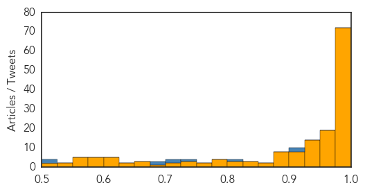
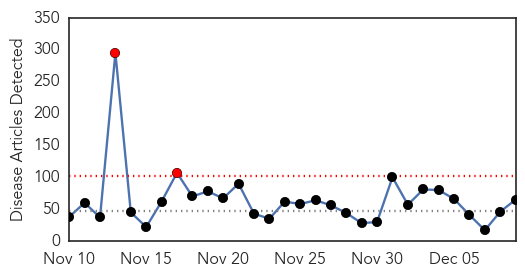
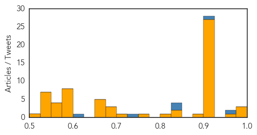

Ebola
30-Day Web Trend
0 alerts, 0 warnings

30-Day Twitter Trend
0 alerts, 0 warnings

Article Locations

Article Confidences
Top Articles:
- 1.000
- Airport screenings haven't turned up any Ebola patients
- 1.000
- Liberia wants to eradicate Ebola before 2015
- 1.000
- Health workers on Ebola response frontlines get boost with donation of protective gear ' UN
- 1.000
- Airport screenings haven't turned up any Ebola patients
- 1.000
- Sierra Leone criticises Save the Children's running of Ebola centre
- 1.000
- No Confirmed Ebola Cases in US, but Virus Still Rages in Sierra Leone
- 1.000
- COMMENTARY: When the next shoe drops — Ebola crisis communication lessons from October
- 1.000
- U.S. Ebola survivor reveals identity, says he's grateful
- 1.000
- Is Governments Penchant for Spin, Hurting the Fight to Defeat EVD?
- 0.999
- Ebola still spreading in western Sierra Leone, Guinea's forest
- 0.999
- US Ebola survivor can't remember 3 weeks
- 0.999
- Ebola still 'flaming' in parts of Sierra Leone, Guinea – UN
- 0.999
- Ebola still 'flaming' in parts of Sierra Leone, Guinea: U.N.
- 0.999
- Sierra Leone Docs Continue Strike Over Ebola Care
- 0.999
- NHS Staff leave for Sierra Leone - Sierra Leone
- 0.999
- At home and cured of Ebola, Cuban doctor vows return to Africa
- 0.999
- State trains its rapid response team to handle Ebola patients
- 0.998
- UN: Ebola still spreading in western Sierra Leone, northern Guinea
- 0.998
- Arrival of Ebola patient causes no unrest in 'well prepared' Netherlands: media
- 0.998
- Malaria deaths have fallen but WHO warns resources are diverted to fight Ebola
- 0.998
- Dallas doctor explains why he sent first U.S. Ebola patient home - National
- 0.997
- UMass Medical chool leading drive to reopen Liberian hospitals in wake of Ebola
- 0.997
- Ebola still 'flaming' in parts of Africa
- 0.997
- Bothell firefighter returns home after fighting Ebola in West Africa
- 0.997
- Ebola Still 'Flaming' in Parts of Sierra Leone, Guinea — Naharnet
- 0.997
- US Airports Screened 2,000 Travelers for Ebola, But Found No Cases
- 0.996
- Malaria death rates fall, Ebola threatens West Africa progress
- 0.996
- Responding to Ebola’s Long-Term Threat to Development
- 0.996
- UPDATE 2-Ebola still spreading in western Sierra Leone, Guinea's forest - U.N.
- 0.995
- ESU grads help fight Ebola in Liberia
- 0.995
- Ebola: UN envoy says intense response needed for western Sierra Leone and Guinea-Mali border
- 0.995
- Strike over inadequate Ebola equipment
- 0.995
- Christian Aid partners train volunteers to offer psychosocial care to Ebola-hit communities - Sierra Leone
- 0.995
- Sierra Leone overtakes Liberia in Ebola cases
- 0.995
- 104 medics to boost AU Ebola fight « Awoko Newspaper
- 0.994
- Namibia encourages volunteers to Ebola-hit W/Africa
- 0.994
- FACTBOX-How Ebola spreads and started
- 0.993
- Epidemics public health Ebola
- 0.993
- Regular press briefing by the Information Service - Ebola Response, 9 Dec 2014 - Sierra Leone
- 0.993
- EU Commissioner Mimica announces new support for fighting Ebola during visit to Guinea
- 0.992
- Ebola Cases Are Down, So Should Liberians Stop Worrying?
- 0.990
- With schools closed in Liberia, education nonprofit joins Ebola battle
- 0.990
- With schools closed in Liberia, education nonprofit joins Ebola battle
- 0.990
- Fear and hope at a Sierra Leone Ebola center
- 0.989
- Sierra Leonean docs strike again over Ebola care
- 0.989
- Junior doctors in Sierra Leone strike over lack of Ebola care
- 0.989
- Recruits sought for Sierra Leone Ebola mission
- 0.989
- Japan presents 20,000 sets of PPEs to UNMEER to fight Ebola
- 0.989
- Junior doctors in Sierra Leone strike over lack of Ebola care : World, News
- 0.989
- Ebola death toll rises to 6,331: WHO
Showing top 50 articles...
Top Tweets:
- 0.922
- Flu and Ebola have some similar symptoms but flu is common in the U.S. while Ebola is very rare. http://t.co/E7rp64rK4Z NIVW2014
- 0.900
- RT: Ebola what a number - takes 300 people to staff a 50-bed Ebola Treatment Unit and Time! Dangerou…
- 0.822
- Ebola outbreak could reverse malaria gains in West Africa's Pedro Alonso tells parliamentarians at report launch. endmalaria
- 0.742
- When hit by global health emergencies like Ebola Africa is lacking infrastructure Dr Nafo-Traoré @RollBackMalaria endmalaria
- 0.722
- .@bihi_selow The 2 Ebola vaccines currently being tested in people are in trials in the US. Assume 3 will too. Announcement is re: vaccine
- 0.711
- RT: Sierra Leone overtakes Liberia in number of Ebola cases: WHO http://t.co/uqrarRMnqY
- 0.698
- The growth in reported Ebola cases in Sierra Leone is definitely slowing albeit still large. But is this real or a reporting artifact?
- 0.686
- Welcoming guests to Malaria Report - "ebola outbreak has shown us that there is no room for complacency" endmalaria
- 0.516
- Comprehensive programs to reduce risk for Ebola among health care workers in Sierra Leone are needed. http://t.co/0A9P8b3XyC
- 0.502
- RT: Rapid Assessment of Ebola Infection Prevention and Control Needs — 6 Districts Sierra Leone: http://t.co/418VYWUWxx
Unknown
30-Day Web Trend
2 alerts, 0 warnings

30-Day Twitter Trend
3 alerts, 0 warnings

Article Locations


Article Confidences
Top Articles:
- 0.999
- Flu cases double in Dallas County
- 0.995
- Flu Patients Double up this Week in Dallas County
- 0.986
- Flu shots less effective; doctors still encourage vaccination
- 0.952
- Tarrant County reports two flu-related deaths
- 0.917
- Chicago Tribune
- 0.917
- Chicago Tribune
- 0.917
- Chicago Tribune
- 0.917
- Chicago Tribune
- 0.917
- Chicago Tribune
- 0.917
- Chicago Tribune
- 0.917
- Chicago Tribune
- 0.917
- Chicago Tribune
- 0.917
- Chicago Tribune
- 0.917
- Chicago Tribune
- 0.917
- Chicago Tribune
- 0.917
- Chicago Tribune
- 0.917
- Chicago Tribune
- 0.917
- Chicago Tribune
- 0.917
- Chicago Tribune
- 0.917
- Chicago Tribune
- 0.917
- Chicago Tribune
- 0.917
- Chicago Tribune
- 0.917
- Chicago Tribune
- 0.917
- Chicago Tribune
- 0.917
- Chicago Tribune
- 0.917
- Chicago Tribune
- 0.917
- Chicago Tribune
- 0.917
- Chicago Tribune
- 0.917
- Chicago Tribune
- 0.917
- Chicago Tribune
- 0.917
- Chicago Tribune
- 0.881
- Flu Season Returns With A Vengeance In Colorado « CBS Denver
- 0.840
- Water supply damage closes Suva clinics
- 0.839
- Had chickenpox as a kid? Watch out for shingles
- 0.822
- ICMR team to visit Tripura to study fresh outbreak of malaria
- 0.755
- KRNV, Reno, NV
- 0.725
- Chile on Alert for Porcine Epidemic Diarrhoea
- 0.698
- Turkey revisits contaminated water woes
- 0.680
- Drug candidate destroys Malaria in 48 hours
- 0.676
- Stray Dogs ‘Terrorising’ Telangana!
- 0.670
- Paying out-of-pocket for healthcare leads to 'deep impoverishment' ' UN report
- 0.670
- Paying out-of-pocket for healthcare leads to 'deep impoverishment' ' UN report
- 0.670
- Paying out-of-pocket for healthcare leads to 'deep impoverishment' ' UN report
- 0.670
- Paying out-of-pocket for healthcare leads to 'deep impoverishment' ' UN report
- 0.669
- Using genome sequencing to track MRSA in under-resourced hospitals
- 0.599
- Cucumbers Likely Cause of Jimmy John's E. Coli Outbreak
- 0.597
- Paris log fire ban goes up in flames
- 0.596
- Researchers from Western CT Health Network Biomedical Research Institute Discover Long-Dormant Viruses Could Later Affect Cancer Outcomes
- 0.595
- Zimbabwe’s Mugabe fires vice president, seven ministers
- 0.584
- Using genome sequencing to track MRSA in under-resourced hospitals
Showing top 50 articles...
Top Tweets:
- 0.955
- .@CapCareMedical is correct-flu vax can't cause flu. Some ppl may get flu-like symptoms that go away after 1-2 days NIVW2014
- 0.901
- Thank you Dr. Michael Jhung answering our flu & flu vaccine questions today in observance of NIVW2014
- 0.848
- B/c how well the flu vaccine works can vary flu antiviral drugs are a second line of defense against flu NIVW2014
- 0.838
- Lastly CDC provides many resources that can give you more information about flu and flu prevention. NIVW2014
- 0.744
- 15 de los 21 países en las Américas (@opsoms) con malaria están en camino de reducir la incidencia por 75% a finales de 2014. EndMalaria
- 0.611
- Let’s talk now about flu antiviral drugs. These are prescription meds used to treat flu. NIVW2014